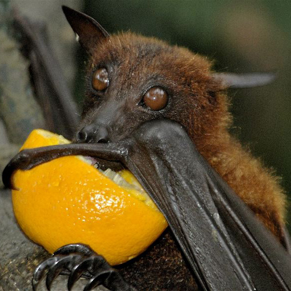

B.A.T stands for Being Absolutely Terrifying. (Just kidding) They are the only mammals that can fly, and that in itself is pretty terrifying!
The fruit bat falls into the category of the Megabat and sometimes they are called the Flying Fox in some locations. There are many differences in their size from one location to the next.
Most bats have only one pup a year, making them extremely vulnerable to extinction. Bat mothers can find their babies among thousands or millions of other bats by their unique voices and scents.